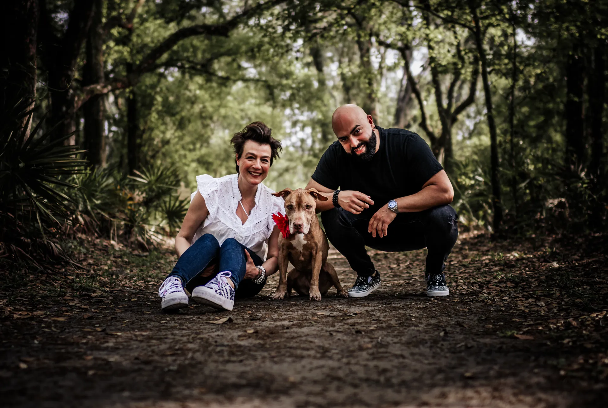

About Harbor
Meet Jennifer & Jonny, the heart behind Harbor
Where unreasonable hospitality meets gold-standard service.

Who owns Harbor Tile & Carpet Cleaning?
Harbor Tile & Carpet Cleaning is owned by Jennifer and Jonny, entrepreneurs originally from Montreal who took over the business in 2023. They were drawn to its strong reputation and loyal customers, and saw a chance to pair top-tier cleaning with their own brand of hospitality, warmth and humor.
Harbor is the first company in Conscious Capital, their family holding company for purpose-driven, high-quality services. Their earlier businesses were all start-ups. This time they stepped into a legacy of excellence, and set out to build on it the right way: with integrity, care and an unreasonable level of customer service.
Their philosophy
If they wouldn’t accept it in their own home, they won’t offer it to yours.
- Premium, pet-safe solutions
- Your floors should be safe for belly rubs and zoomies.
- A relentless focus on quality
- If a stain can be removed, they will remove it.
- Genuine hospitality
- Good service isn’t just about the clean. It’s about how you feel afterward.

What unreasonable hospitality looks like
Your home deserves a spa day too. The goal is simple: service so good you never want to call another cleaning company again.
- Treats for the pets
- The crew brings treats, and knows every animal by name.
- Coffee on early calls
- Croissants or coffee for an early-morning appointment, just because.
- Thank-yous for referrals
- When you send a friend, a thank-you gift comes back to you.
- Never rushed
- Every job gets the time it needs to get the best result.
Quality first, not the lowest price
Harbor doesn’t try to be the cheapest call you can make. It uses the highest-grade products and the best equipment, takes the time each job needs, and prices the work honestly for that.
That standard extends to the team. Harbor’s technicians are paid a living wage, so they can support their families and grow with the company. People who are looked after look after your home.
And because Jennifer and Jonny love animals, Harbor has a pet-friendly heart, from the solutions it uses to the animal causes it supports.
- 240five-star Google reviews
- $1M+liability insurance
- $1M+saved in potential replacement costs
Get a Personalized Quote
Tell us what needs cleaning and we will get back to you with a personalized estimate. Prefer to talk? Call or text (561) 301-1977.
Your request is ready.
Send it to Harbor by text or email. Nothing is sent until you choose.
Text it to Harbor Email it instead